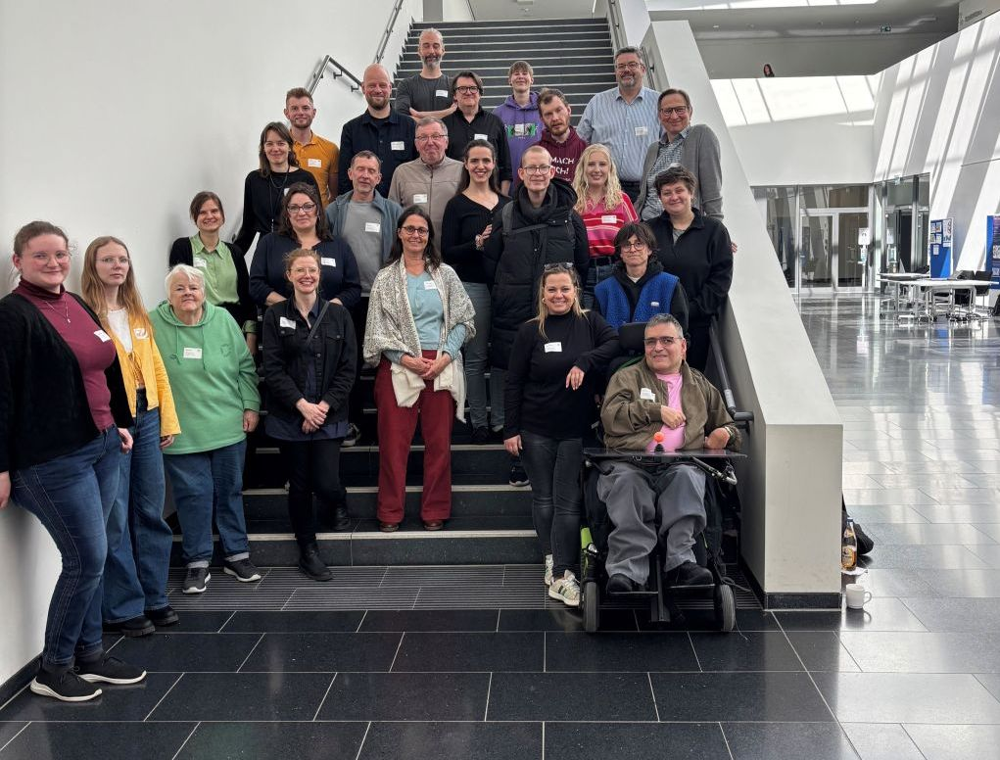
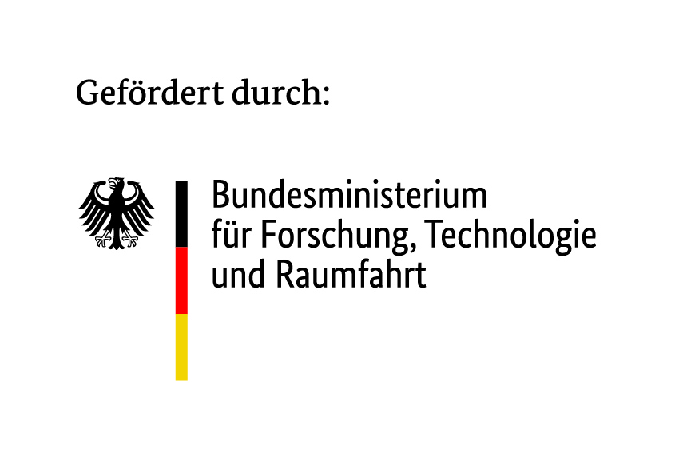
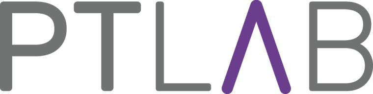

Auf einen Blick
Unser Projekt
Was ist DiKomAll?
DiKomAll ist ein Projekt, bei dem es um Mitbestimmung in der Stadt geht.
Wir wollen, dass alle Menschen sagen können, was sie in ihrer Stadt wichtig finden.
Besonders Menschen mit geistiger Behinderung werden oft nicht gefragt.
Das wollen wir ändern.
In unserem Projekt arbeiten Wissenschaftler und Experten zusammen.
Einige Experten sind Menschen mit sogenannter geistiger Behinderung.
Sie wissen am besten, wo es Hindernisse (Barrieren) in der Stadt gibt.
Gemeinsam entwickeln wir Computer-Programme und Apps.
Diese Werkzeuge sollen so einfach sein, dass jeder sie benutzen kann.
So können alle mitmachen und ihre Stadt besser machen.
Unser Team

Hier sehen Sie unser Projektteam. Wir sind viele verschiedene Menschen, die zusammenarbeiten.
Wissenschaftler
Menschen von Hochschulen und Universitäten. Sie wissen viel über Stadtplanung, Computer und wie man Menschen am besten hilft.
Leute aus der Praxis
Menschen, die in der Stadtverwaltung arbeiten oder Apps bauen. Sie helfen dabei, dass die neuen Werkzeuge auch wirklich benutzt werden können.
Co-Forschende
Das sind Menschen mit sogenannter geistiger Behinderung. Sie arbeiten aktiv im Projekt mit. Sie zeigen uns, was sie in der Stadt brauchen.
So arbeiten wir zusammen
In unserem Team ist uns wichtig, dass alle gut zusammenarbeiten können. Wir haben gelernt:
- Gleiche Rechte: Alle im Team haben die gleichen Rechte.
- Respekt: Wir nehmen uns gegenseitig ernst und sind freundlich zueinander.
- Voneinander lernen: Jeder hat andere Stärken. Wir lernen viel voneinander.
- Unterstützung: Wir helfen uns gegenseitig, wenn jemand Hilfe braucht.
- Zeit: Wir lassen uns genug Zeit, damit alle alles verstehen können.
Wir haben auch über wichtige Themen nachgedacht, wie zum Beispiel: Kommunikation, digitale Barrieren, Zeit und Assistenz.
Unser E-Book
Erfahren Sie mehr über unser Projekt in unserem E-Book mit Bildern und Texten.
E-Book ansehen (mit Vorlesefunktion)

Unsere Arbeit: Wer macht was?
In unserem Projekt arbeiten viele verschiedene Partner zusammen. Jeder Partner hat eine wichtige Aufgabe. Gemeinsam machen wir die Stadtplanung für alle einfacher.
Hochschule Bochum - Gesundheitswissenschaften
Mehr Menschen für die Stadtentwicklung erreichen. Digitale Unterstützung von individueller und Grupenpartizipation
- Projektleitung & Koordination
- Partizipative Sozialraumanalyse
- Wissenschaftliche Evaluation
Hochschule Bochum - Geodäsie
Verknüpfen digitaler Partozipationsformate mit KomMonitor - Entwicklung von Demonstratoren.
- Entwicklung von KomMonitor
- Barrierefreie Nutzerschnittstellen
- Geoinformatik & Datenintegration
Universität Leipzig
Befähigung/Voraussetzungen zur (digitalen) Partizipation an kommunalen Planungsprozessen
- Inklusion im Sozialraum
- Forschungsethik im Kontext Behinderung
- Leichte Sprache im Arbeitsleben
Universität zu Köln
Aufbereitung geovisueller Information für Menschen mit sog. geistiger Behinderung
- Wissenschaftskommunikation
- Partizipative Aufbereitung von Wissen
- Barrierearme digitale Formate
Stadt Bochum
Inklusive Beteiligung in der Praxis erproben.
- Lärmaktionsplanung
- Fachplan Gesundheit
- Kommunale Umsetzung
Bundesinstitut für Öffentliche Gesundheit (BIÖG)
Gesunde Stadtentwicklung bundesweit fördern. StadtRaumMonitor barrieresensibel gestalten
- Implementierung StadtRaumMonitor
- Ergebnis-Verbreitung
- Öffentlicher Gesundheitsdienst
Wittekindshof
Perspektive der Menschen mit sogenannter geistiger Behinderung einbringen.
- Zusammenarbeit mit Co-Forschenden
- Büro für Leichte Sprache
- Lebensraumorientierung
Planersocietät
Praxistransfer in die Verkehrs- und Stadtplanung.
- Kreative Planungsdialoge
- Erprobung von Prototypen
- Kommunikationsmanagement
Co-Forschende
Barrieren erkennen und gemeinsam Lösungen auf Augenhöhe entwickeln.
- Experten für Barrieren: Einbringen ihrer Perspektiven
- Co-Creation-Prozesse in Arbeitsgruppen mit allen Partnern
- Aktive Begleitung des gesamten Projekts
Glossar: Wichtige Begriffe
- LDEN: Der Gesamtwert über den ganzen Tag (00:00 – 24:00 Uhr).
- LNight: Der Wert für die Nachtruhe (22:00 – 06:00 Uhr).
- LDay: Der Wert für den Tag (06:00 – 18:00 Uhr).
- LEvening: Der Wert für den Abend (18:00 – 22:00 Uhr).
- Mobilität (wie man von A nach B kommt)
- Öffentlicher Raum (wie Parks oder Plätze)
- Versorgung, Arbeit und Wohnen
- Soziales Miteinander
- Klimafolgenanpassung (Schutz vor Hitze oder Regen)

